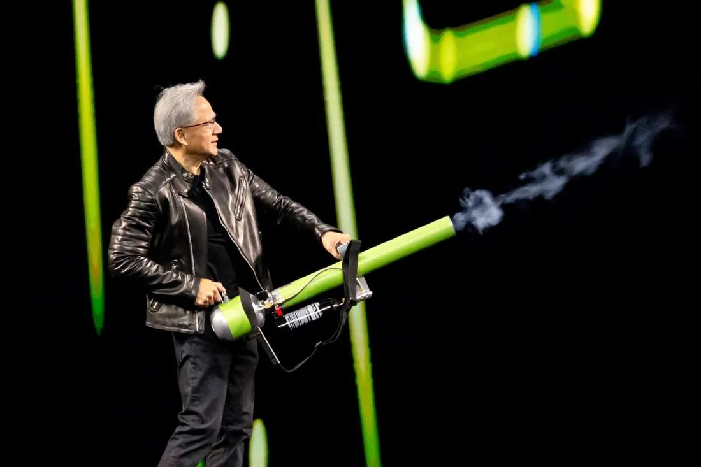

Jensen Huang Resigns as Nvidia CEO; Colette Kress Named Interim Chief
Update to flashes 309, 310 and 311: Jensen Huang resigned as Nvidia's president, CEO and board member, effective immediately, the company announced on November 12, 2026. CFO Colette Kress serves as interim CEO while keeping her CFO role, and Harvey C. Jones becomes the board's first-ever chair. The announcement gives no reason and carries no statement from Huang. Shares fell 10% in premarket trading; the company has lost about $600 billion in market value this week. Q3 fiscal 2027 results remain scheduled for November 17.

- 01THE RESIGNATION — Nvidia announced on November 12, 2026 that Jensen Huang resigned as president, CEO and board member, effective immediately; the board accepted the resignation on Wednesday and filed a Form 8-K.
- 02THE SUCCESSION — CFO Colette Kress serves as interim CEO while keeping her CFO role; Harvey C. Jones becomes the board's first-ever chair; the board is searching for a permanent CEO among internal and external candidates.
- 03THE WATCHPOINT — Whether Kress steadies the stock on the November 17 earnings call, who the permanent chief executive is, and whether the House briefing or subpoena proceeds after Huang's departure.
WHAT HAPPENEDWhat Happened
Update to flashes 309, 310 and 311: Jensen Huang has resigned as president, chief executive officer and a member of Nvidia's board, effective immediately, Nvidia announced on Thursday, November 12, 2026. The board accepted his resignation on Wednesday, according to a regulatory filing cited by TechCrunch, and the company also filed a Form 8-K the same day. The announcement ends Huang's 33-year run leading the company he co-founded in 1993, and makes chief financial officer Colette Kress the first person other than Huang to run Nvidia.
Kress, Nvidia's executive vice president and chief financial officer since September 2013, will serve as interim chief executive while keeping her CFO role until a permanent successor is named. The board said it has begun a search and will consider internal and external candidates, and it appointed Harvey C. Jones, a former Synopsys chief executive, as its first-ever chair of the board. Jones said the board has "full confidence in Colette and the leadership team" and expects "operations, customer commitments and product roadmap to continue without interruption." Kress said she is "committed to building on the extraordinary foundation Jensen created over the last 33 years."
The announcement gives no reason for the resignation and carries no statement from Huang. The board thanked him for his "immeasurable contributions to the company and the industry." The resignation follows a week in which the Wall Street Journal reported the board was preparing to remove Huang, Reuters reported the board met late Wednesday to decide his future, and the New York Times reported a second extramarital relationship, with Kimberly Powell, Nvidia's vice president of health care. On November 8, Huang told staff he had been unfaithful to his wife, and the board opened an independent investigation into reports that he had been targeted by a foreign intelligence effort.
The market reaction was immediate. Nvidia shares fell 10% in premarket trading, Barron's reported, and traded at $158.58, down 8.7%, in early Thursday trading, on pace for their lowest close since July 2025. The company has lost about $600 billion in stock market value this week. Nasdaq 100 futures fell 1.3% and S&P 500 futures fell 0.7%, while the iShares Semiconductor ETF fell 2.9%. Analysts moved fast: Bernstein cut its price target to $200 from $400 and lowered its rating to market-perform, Baird cut its target to $200 from $500 and downgraded the stock to neutral, and Morgan Stanley removed Nvidia from its Top Pick list, CNBC reported. Dan Ives of Yorkville Ives valued the stock at $225 without Huang, against $300 with him.
Kress's first test comes on Tuesday, November 17, when Nvidia reports third-quarter fiscal 2027 results at approximately 1:20 p.m. PT, as previously scheduled, followed by an earnings call at 2 p.m. PT. The House track is unresolved: three committee chairs requested a closed-door briefing from Huang on November 18, the November 11 response deadline passed with no public reply, and House Foreign Affairs Chairman Brian Mast said his committee is preparing a subpoena.
WHY IT MATTERSThe trigger fires: preparation becomes a resignation
Flash 310 recorded a board meeting to decide; this flash records the decision. The board accepted Huang's resignation on Wednesday and announced it before Thursday's open, moving the story from reported deliberation to a confirmed leadership change in under a day. The announcement's silence is itself a signal: no reason given, no quote from Huang, and no timeline for a permanent successor. The board is managing the transition as a continuity event, with Kress holding both top jobs and Jones installed as the board's first chair.
The succession gap the market feared is now the market's reality. Huang co-founded Nvidia in 1993, held dozens of direct reports, and had no publicly named successor; Kress is a finance leader, not a chip architect, and she has run the company's finances since 2013 after nearly 25 years at Cisco and Microsoft. The 10% premarket slide and the roughly $600 billion weekly value loss price a governance discount on a company whose product roadmap the board insists is unchanged.
WHAT TO WATCHTwo dates now frame the story
November 17 is the first hard test. Kress will present third-quarter fiscal 2027 results and face analysts on the earnings call, a day before the House briefing date. Any guidance change, or any signal about who the permanent chief executive might be, will move the stock more than the resignation itself did.
November 18 is the second. The House briefing request still stands, the response deadline has passed, and a subpoena is being prepared. Whether the committees pursue Huang personally now that he has left the company, and whether the board's independent investigation publishes findings, will determine whether this stays a governance story or becomes a national-security one.
SIGNAL JUDGMENT — ANALYSISThe founder is gone; the question is now who the permanent chief will be
Tokenta Signal's judgment: The trigger that flashes 309 and 310 tracked has fired, and the decision is faster and cleaner than the reports suggested: a resignation, not a removal vote, announced before the open with an interim chief already named. The board's framing is continuity, and the market's framing is a discount, with shares down 10% premarket and about $600 billion gone this week. Both can be true at once: the roadmap and the customer commitments are unchanged, and the company has still lost the only chief executive it has ever had, days before earnings. The next facts that matter are the November 17 results and the permanent successor search, not the allegations that forced the decision.
WHAT REMAINS UNCERTAINWhat Remains Uncertain
EVIDENCEEvidence
Nvidia's own announcement, read in full: Jensen Huang has resigned as President, Chief Executive Officer, and a member of the Board, effective immediately. Colette Kress, Executive Vice President and Chief Financial Officer, has agreed to serve as Interim Chief Executive Officer while continuing as CFO until a permanent successor is named. Harvey C. Jones was appointed the board's first-ever Chair. Nvidia will report third-quarter fiscal 2027 results on Tuesday, November 17, at approximately 1:20 p.m. PT, as previously scheduled.
PRIMARY SOURCESPrimary Sources
- NVIDIA via GlobeNewswire: NVIDIA Announces CEO Transition
https://www.globenewswire.com/news-release/2026/11/12/3401635/0/en/nvidia-announces-ceo-transition.html - TechCrunch: Nvidia's Jensen Huang resigns, chipmaker names CFO Colette Kress as interim CEO
https://techcrunch.com/2026/11/12/nvidias-jensen-huang-resigns-chipmaker-names-cfo-colette-kress-as-interim-ceo/ - Barron's: Nvidia CEO Jensen Huang Resigns. Stock Drops 10%.
https://www.barrons.com/articles/nvidia-stock-price-huang-affair-ceo-ouster-26c99dad - Reuters via Global Banking and Finance: Nvidia CEO Jensen Huang Steps Down, Impacting AI Industry
https://www.globalbankingandfinance.com/nvidia-ceo-jensen-huang-step-down-big-blow-ai-boom/ - Quantisnow: NVIDIA Corporation filed SEC Form 8-K: Leadership Update, Financial Statements and Exhibits
https://www.quantisnow.com/insight/nvidia-corporation-filed-sec-form-8-k-leadership-update-financial-statements-6786747